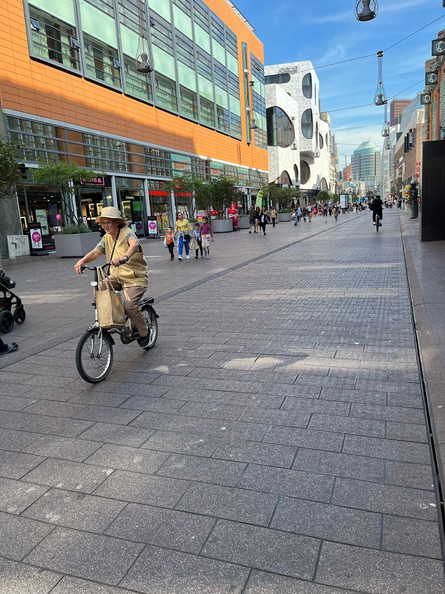

The Hague boasts an extensive network of dedicated cycling paths and lanes. These are typically marked with red asphalt and have clear signage. The city has invested in creating safe and separate spaces for cyclists, making it easy to navigate by bike. Many streets in The Hague are designed to accommodate both cars and bicycles. This often includes designated bike lanes on the road, and sometimes even separated bike lanes from the main traffic which makes it bicycle-friendly.The Netherlands is renowned for its cycling culture, and The Hague is no exception. Cycling is a common and widely accepted mode of transportation for both locals and visitors. You'll find people of all ages cycling in the city.Guided bike tours are available for tourists who want to explore the city and learn about its history and culture from a local guide.Cycling is an eco-friendly way to explore The Hague. It helps reduce congestion and pollution while promoting a healthy lifestyle. The Hague has designated bike parking areas, including bike racks and guarded bike storage facilities at major transportation hubs and city centers. It's essential to lock your bike securely to prevent theft.

The city provides abundant bike parking facilities throughout its neighbourhoods. You'll find bike racks and dedicated bike parking areas at train stations, shopping centres, and various public places. Cycling in The Hague is not limited to a specific demographic. You'll see people of all ages, from young children to senior citizens, riding bicycles. Families often transport their children on specially designed cargo bikes.Cycling in The Hague is not only an efficient way to get around but also an opportunity to explore the city at your own pace, enjoying the beautiful parks, historic sites, museums, and other attractions. It's an eco-friendly and healthy mode of transportation, and the flat terrain of the city makes it accessible to cyclists of all skill levels. So, whether you're a resident or a visitor, consider embracing the cycling culture in The Hague to experience the city like a local.Cyclists in The Hague are expected to follow traffic rules, just like motorists. This includes obeying traffic signals, yielding to pedestrians, and using hand signals for turning. You should also ensure your bike has proper lighting for nighttime riding.
Cycling is considered an eco-friendly and sustainable mode of transportation in The Hague, aligning with the city's commitment to environmental conservation. n summary, cycling in The Hague is efficient, safe, and a common way to get around the city. It offers an excellent opportunity to explore the urban areas, parks, and beautiful landscapes of this Dutch city while promoting a healthy and sustainable lifestyle.The Hague is a bicycle-friendly city with a flat terrain that makes cycling accessible and enjoyable. It's a great way to immerse yourself in Dutch culture and explore the city and its surroundings at your own pace. Just remember to follow traffic rules and respect other road users for a safe and enjoyable cycling experience.Cycling is not just a means of transportation; it's a way of life for many people, promoting physical health, environmental sustainability, and a sense of freedom and adventure. Whether you cycle for leisure, exercise, or commuting, it's a versatile and enjoyable activity that offers numerous benefits.